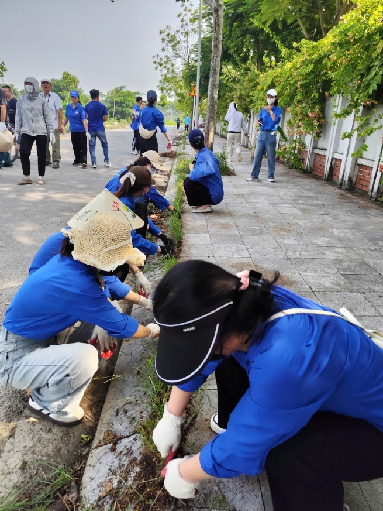

Hanoi Targets Greener and More Beautiful Rural Areas
In its effort to build new rural areas, alongside focusing on economic development and improving people’s livelihoods, Hanoi also emphasizes implementing Criterion No. 17 on the environment, which aims to create a rural landscape that is bright, green, clean, and beautiful. Across all communes and wards of Hanoi, thousands of residents have participated in cleaning efforts from alleyways to fields. These seemingly small actions are playing an important role in developing advanced and model new rural areas.

Preserving rural landscapes through community strength
In early August 2025, Duong Hoa commune launched a general environmental sanitation campaign with the goal of spreading the message of building the commune and the capital city as “bright, green, clean, and beautiful.” According to Nguyen Trong Tan, Vice Chairman of the People’s Committee of Duong Hoa Commune, environmental sanitation, urban beautification, and building a civilized urban lifestyle have been given special attention by the commune’s Party Committee and authorities, with many practical solutions implemented. As a result, residential roads and public works have become cleaner, greener, and more pleasant; public awareness of environmental protection has gradually improved. However, there are still cases of waste being dumped improperly, and a segment of officials and residents remain insufficiently conscious of environmental protection.
Not only Duong Hoa, but Son Tay Ward has also carried out a comprehensive environmental sanitation campaign to maintain urban and public order while implementing the Farmers’ Tree Rows project. The program involved officials, members of the Veterans’ Association, Women’s Union, Youth Union, and residents from villages and residential groups throughout Son Tay Ward. Participants cleaned pedestrian streets, the areas inside and outside Son Tay Ancient Citadel, pruned and planted trees, tended flower gardens, cultural houses, public areas, and self-managed streets, maintained order on main streets, removed waste, and cleared waterways, rivers, canals, and ditches in the locality.

Phan Thi Thu Hien, Vice Chairwoman of the Fatherland Front Committee of Son Tay Ward and Chairwoman of the Son Tay Farmers’ Association, stated that the “Farmers’ Tree Rows” project is an exemplary model for building modern, environmentally friendly new rural areas and highlights the determination of Son Tay’s farmers to actively participate in rural development.
Meanwhile, in Xuan Mai commune, more than 300 officials, youth union members, association members, and thousands of residents from 36 residential areas simultaneously participated in weekend sanitation drives. Groups cleared weeds, collected garbage, dredged ditches, and removed illegal advertisements. Nguyen Thi Hop, 73, from Tri Thuy Village, Xuan Mai Commune, happily shared: “I’m old now, but I still try to clean the alley in front of my house. When it rains, there’s no garbage buildup or bad smell, and that makes me feel secure.” Beyond cleaning villages and alleyways, Xuan Mai has also promoted collecting pesticide packaging in fields and guided farmers to use biological products for treating agricultural waste, providing essential measures to protect the environment and public health.
Toward greener, cleaner, more beautiful countryside
The highlight of recent environmental sanitation activities has been the proactive, voluntary, and responsible spirit of residents. Le Van Thu, Chairman of the People’s Committee of Phuc Loc Commune, affirmed: “The sanitation campaign is not only to celebrate the 80th anniversary of the August Revolution and National Day (September 2), and the Party congresses at all levels, but also a way for each resident to demonstrate responsibility and love for their homeland.” With methodical and synchronized implementation, the commune’s Party Committee and authorities will continue to maintain the sanitation movement every Saturday morning, turning voluntary action into a sustainable cultural habit.
In Phu Nghia Commune, self-managed environmental teams have been tasked with maintaining the “Green Sundays” activity, associated with the “Bright, Green, Clean, Beautiful, and Safe Alley” movement. The Women’s Union, Farmers’ Association, and Youth Union have taken charge of self-managed roads, installed vivid propaganda panels, and promoted awareness. Nguyen Dinh Sy, Chairman of the People’s Committee of Phu Nghia Commune, emphasized that this movement has a starting point but no ending point. It is a shared responsibility that must become a daily habit of every resident.
In Xuan Mai, local authorities have established monitoring and evaluation mechanisms at each residential group. Community Zalo groups and loudspeaker systems have been maximized to deliver reminders and spread messages. Many households, without waiting for government directives, have divided tasks, bought tools, and cleaned village roads and alleys together. These actions vividly reflect the spirit of “protecting the common environment is protecting our own families.”
Alongside landscape cleaning, localities have also paid attention to raising public awareness through environmental communication programs, Party cell activities, and community organizations. Commune police, militias, and grassroots security teams have strengthened patrols and strictly handled violations such as sidewalk encroachment and littering, ensuring urban order and environmental sanitation.
According to Nguyen Xuan Dai, Director of the Hanoi Department of Agriculture and Environment, thanks to the active participation of the community, Hanoi is gradually building new rural areas that not only meet infrastructure standards but also achieve the goal of being bright, green, clean, and beautiful in landscape, and civilized in lifestyle. This strength does not come from administrative orders but from the unity and shared determination of every resident in the villages.